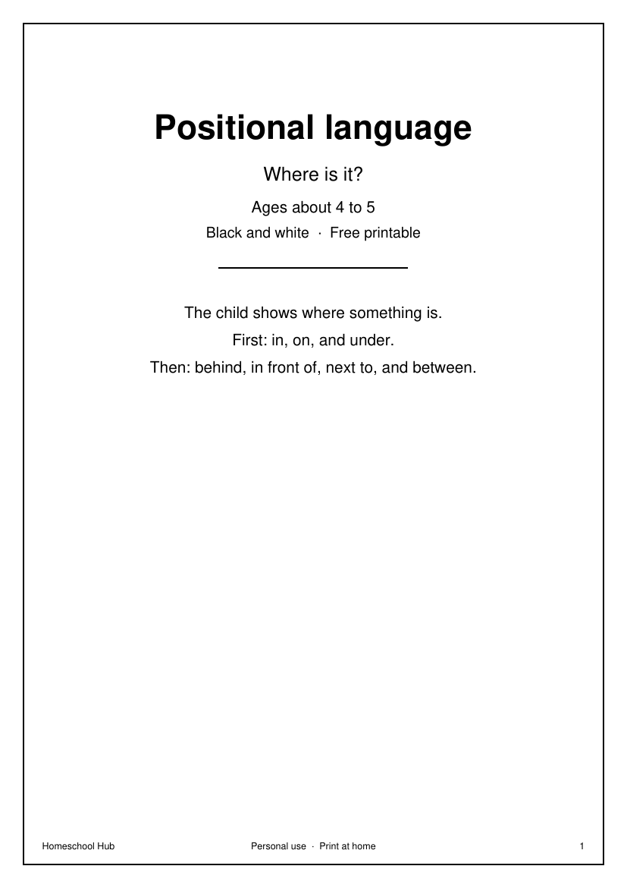

Free printable
Positional language
Ages about 4–5
What this teaches: The child shows where something is: in, on, under, behind, in front of, next to, and between.
What comes next: They use these words when they tidy, or when they follow a picture.
What you need: A pencil.
